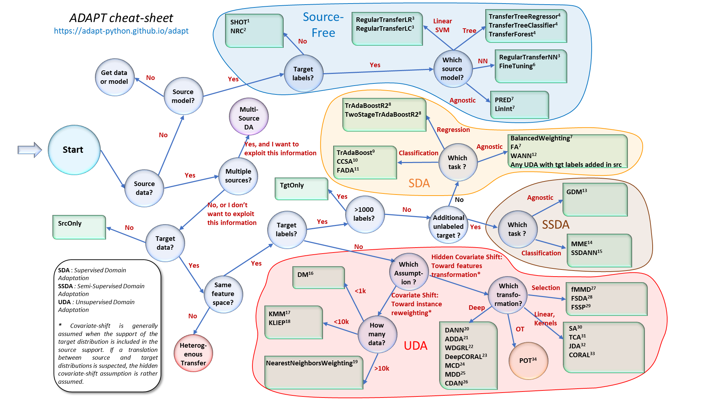

Selecting the right domain adaptation model
When facing a new domain adaptation problem, it can be particularly difficult to choose the appropriate transfer learning algorithm.
The flowchart below has been designed to help the user to quickly identify which type of algorithm could be used in a specific case. The choice of transfer method is driven by practical characteristics derived from the available datasets.
Click on any algorithm in the diagram below to see its documentation.
